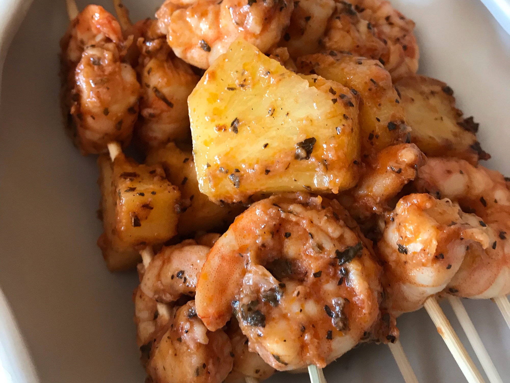

Grilled Shrimp

Marinated Grilled Shrimp
Learn how to marinate shrimp for grilling with this easy marinade that
makes your shrimp so yummy you don't even need cocktail sauce. Don't let
the cayenne pepper scare you — you don't even taste it. It is also a big
hit with company and easy to prepare. I make this with frozen or fresh
shrimp and use my indoor electric grill if the weather is not good for
outdoor grilling. Try it with a salad, baked potato, and garlic bread.
The dish involves a prep time of 15 minutes, a cook time of 5 minutes and
an additional 30 minutes bringing the total time to 50 minutes. The meal
is for a serving of 6 people. You can adjust the ingridients to the
desired serving.
Ingredients
- ⅓ cup olive oil
- ¼ cup tomato sauce
- 3 cloves garlic, minced
- 2 tablespoons red wine vinegar
- 2 tablespoons chopped fresh basil
- ½ teaspoon salt
- ¼ teaspoon cayenne pepper
- 2 pounds fresh shrimp, peeled and deveined
- 6 each skewers
Steps/Directions
-
Stir together olive oil, tomato sauce, garlic, and red wine vinegar in a
large bowl. Season with basil, salt, and cayenne pepper. Add shrimp to
the bowl; stir until evenly coated. Cover and refrigerate for 30 minutes
to 1 hour, stirring once or twice.
- Preheat the grill to medium heat. Lightly oil the grate.
-
Thread shrimp onto skewers, piercing once near the tail and once near
the head. Discard marinade.
-
Cook shrimp on the preheated grill until opaque, 2 to 3 minutes per
side.